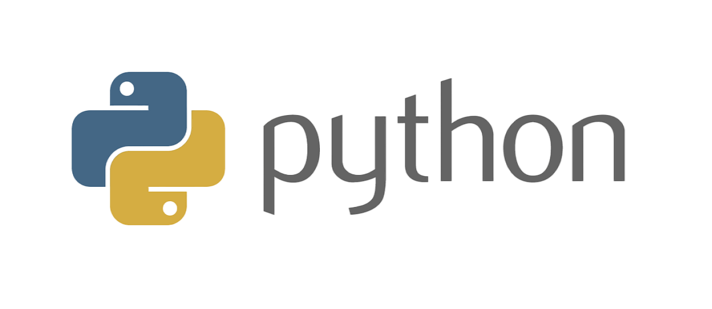

Portfolio info
Portfolio
2éme Technologie d'Informatiqur
Algorithmique et programmation
ligne hortizontale:

- Un Algorithme est une suite funale et non ambilgus d'inetructions et d'opération permettant
de résoudre un problème donné.
- Ucn Python est le longage de programmation oen source le plus emplyé par les
informaticiens. développer du code avec Python est plus rapide qu'avec d'autres langages.
Voir plus ..
Robotique
la Robotique est l'ensemble des techniques prrmettant la conception et la realisation de machines automatiques du de robots.
Voir plus ...
Css & html
- Le HTML est un language informatique utilisé sur l'internet. Ce longage est utilisé pour créer des pages web. L'acronyme signifie Hypertext Markup language .
- le CSS pour casading Style sheets ,est un language informatique utilisé sur internet por la mise en firme de fichiers et des pages Html.

Voir plus ...
Documentation: sit W3Scool W3School